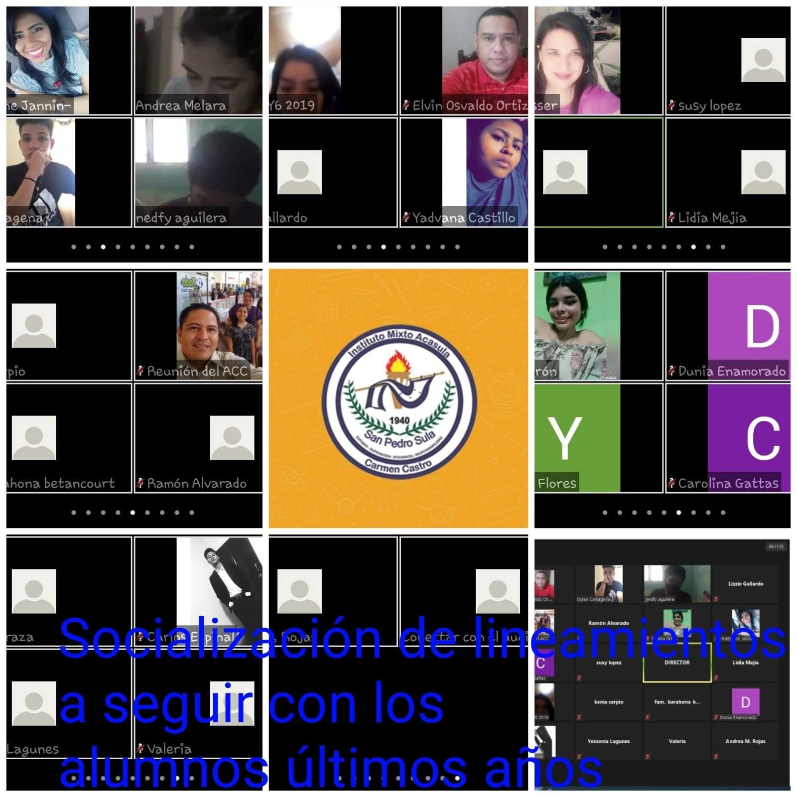

Las aulas virtuales son una nueva modalidad educativa que se desarrolla de manera complementaria o independiente a las formas tradicionales de educación, y que surge a partir de la incorporación de las tecnologías de información y comunicación (TIC), en los procesos de enseñanza-aprendizaje. Actualmente se utiliza en muchas universidades, escuelas y organizaciones laborales.
En este espacio llamado aula virtual se realizan distintas formas de trabajo colaborativo configurando un escenario de enseñanza a través de los recursos de la web.
Las TIC abren, sin duda, por sus propias características, nuevas posibilidades de innovación y mejora de los procesos formales de enseñanza y aprendizaje, pero la mera incorporación de herramientas tecnológicas a las prácticas educativas no garantiza en modo alguno que esa mejora se produzca realmente. De hecho, existen indicios de que lo que ocurre, al menos en determinadas ocasiones, es exactamente lo contrario: que la introducción de las TIC en las prácticas educativas sirve más para reforzar los modelos dominantes y ya establecidos de enseñanza y aprendizaje que para modificarlos
